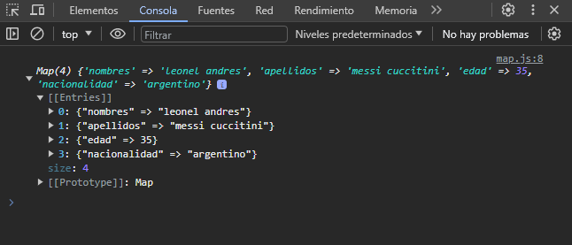

Creando un nuevo Map
let mapa = new Map([
["nombres", "leonel andres"],
["apellidos", "messi cuccitini"],
["edad", 35],
["nacionalidad", "argentino"]
])
En este ejemplo, creamos un elemento map que no es mas que un mapa de pares clave-valor. En este map tenemos elemento y para ingresar elementos se hace dentro de un corchete padre, pero cada elemento clave valor va dentro de un corchete [ ... , ... ].
En consola se muestra lo siguiente:
Para saber la longitud del map, utilizamos la propiedad .size para mostrar la cantidad de elementos "clave-valor" que se encuentran en nuestro mapa.
console.log(mapa.size)
Para establecer nuevos elementos al mapa, utilizamos el método .set(clave, valor), en caso de ingresar un nuevo elemento con una clave igual a otra, pues esta se sobrescribirá su valor.
mapa.set("telefono", "74589632")
mapa.set("empleado", true)
Para comprobar si un elemento existe en el mapa, utilizamos el método .has(clave), como parámetro ingresamos la clave del elemento para saber si existe o no. Este nos devuelve un boolean, si existe el elemento nos devolverá true, de lo contrario, nos devolverá false.
console.log(mapa.has("edad"))
console.log(mapa.has("nacionalidad"))
console.log(mapa.has("hobbies"))
Para eliminar un elemento en especifico se utiliza el método .delete(clave), como parámetro ingresamos la clave del elemento. Este nos devolverá un boolean, nos devolverá true en caso de ser eliminado el elemento, de lo contrario, nos devolverá false.
console.log(mapa.delete("telefono"))
console.log(mapa.delete("empleado"))
console.log(mapa.delete("hobbies"))
Para eliminar todos los elementos y vaciar el mapa, utilizamos el método .clear(), este método no devuelve nada y nos dejara el mapa con cero elementos.
mapa.clear()